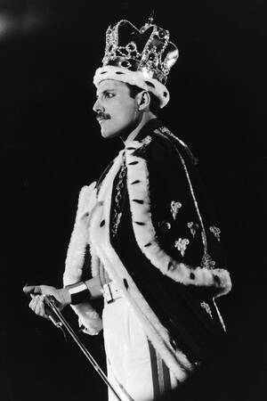
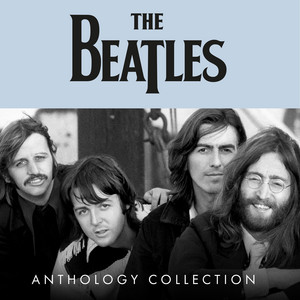

Michael Jackson
Conocido como el "Rey del Pop", fue un cantante, compositor y bailarín estadounidense que revolucionó la industria de la música.


Canciones destacadas:
- Thriller
- Billie Jean
- Beat It
Bienvenido a nuestra página sobre grandes exponentes de la música.
<<<<<<< HEADConocido como el "Rey del Pop", fue un cantante, compositor y bailarín estadounidense que revolucionó la industria de la música.
Conocida como la "Reina del Pop", es una cantante, bailarina y empresaria estadounidense referente en la reinvención musical.

Banda británica de rock formada en 1970 en Londres, conocida por su gran diversidad musical y espectáculos multitudinarios.


Banda de rock británica formada en Liverpool durante los años 1960, considerada una de las más influyentes de la historia.


Cantante y actor puertorriqueño, uno de los referentes e íconos más importantes en la historia del reggaetón.


Considerado el "Rey del Reggaetón", fue un cantante y productor puertorriqueño que popularizó el género a nivel mundial.